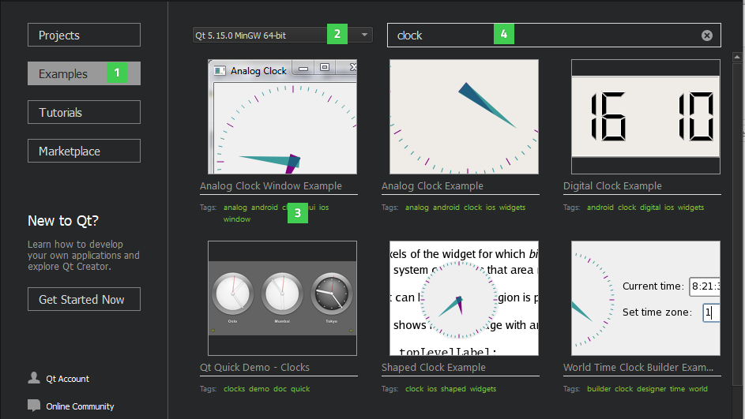
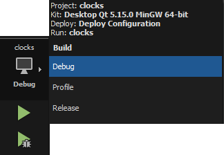

Building and Running an Example
You can test that your Qt installation is successful by opening an existing example application project.
To run an example application on an Android or iOS device, you must set up the development environment for Android or iOS. For more information, see Connecting Android Devices and Connecting iOS Devices.
To run an example application on a Boot2Qt device, you must set up Qt for Device Creation on the development host and create connections between the host and devices. For more information, see Installation Guides in the Qt for Device Creation documentation.
If you have Qt Design Studio installed, you can open Qt Design Studio examples from Qt Creator in Qt Design Studio.
- In the Welcome mode, select Examples (1).

If no examples are listed, check that a Qt version (2) is installed and configured. If you select a Qt for Android or iOS, only the examples tested for Android or iOS are listed.
- Select an example in the list of examples.
You can also use tags (3) to filter examples. For instance, enter the Boot2Qt tag (commercial only) in the search field (4) to list examples that you can run on Boot2Qt devices.
- To check that the application code can be compiled and linked for a device, click the Kit Selector and select a kit for the device.

If you installed Qt Creator as part of a Qt installation, it should have automatically detected the installed kit. If no kits are available, see Adding Kits.
- Click
 (Run) to build and run the application.
(Run) to build and run the application. - To see the compilation progress, press Alt+4 to open the Compile Output pane.
If build errors occur, check that a Qt version and compiler are installed and configured and that the necessary kits are configured. If you are building for an Android device or iOS device, check that the development environment has been set up correctly.
The Build progress bar on the toolbar turns green when the project is successfully built. The application opens on the device.